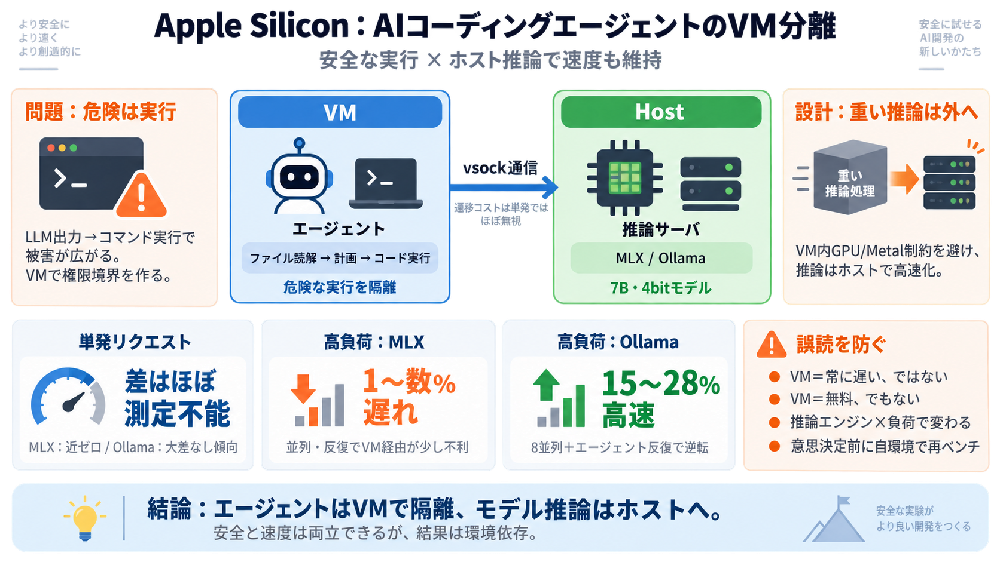

危険条件
LLM出力 → コード実行

AIコーディングエージェントをVMで安全に実行しても、モデル推論をVMに閉じ込めない限り「速度と安全」を両立できる、という結論をベンチ観点で整理します。
危険性の中心は、LLMの出力をもとに「コードを実行する」ことです。ファイル読解の過程で悪意ある指示（プロンプトインジェクション）が混入すると、強権限でコマンドが走る可能性があります。
Apple SiliconではVM内の推論が遅くなりがちです（ホストGPU共有＝Metalの制約が壁）。そこで「危険な実行＝VM」「重い推論＝ホスト」を分離します。
VM内のエージェントはvsockで推論要求をホストへ転送し、ホスト側でMLXまたはOllamaがモデル（7B,4bit）を推論します。
ポイント：VM境界のコストだけでなく、推論エンジンとI/O経路の相互作用も含めて評価します。
単発リクエストでは、vsock経由の追加コストはほぼ測定不能です（MLXでは「ほぼゼロ」に近い）。
負荷が増えると傾向が分かれ、MLXではVMがわずかに不利になり、合計ウォールタイムで1〜数％遅れる方向が見られます。
Ollamaでは逆に、8並列クライアントやエージェント反復ループで、VM経由の方が15〜28%高速という結果が出ています。
結論：VM境界そのものより、推論エンジンのI/Oモデルやスケジューリングが支配し得ます。
著者は、推論サーバやクライアント側のCPU競合、I/O経路、macOSのセキュリティ/プロセス生成オーバーヘッド等がVMで別条件になり得ると述べます。ただし機序は未確定です。
Ollama側で初回測定では、VM/サーバ停止・再起動が不十分で、エージェントループが極端に遅い二峰性（bimodal）になった可能性があります。以降は各測定の前に適切に停止・再実行しています。
VMのコストは一方向ではなく、ワークロードと推論エンジンで逆転し得ます。そのため片方の結果だけを見せると「VM＝無料」や「VM＝常に遅い」という誤解が生まれる、と著者は主張します。
OllamaでVM経由が速い結果は魅力的ですが、原因は未解明で、クライアント実装・バックグラウンド・サーバ設定・OS差・測定粒度で簡単に変わり得ます。意思決定前に自環境で再ベンチする姿勢が必要です。
Apple Siliconでは、エージェントをVMに閉じ込めつつ、モデル推論はホストで行う分離設計が現実的です。コストは単発でほぼ無視でき、負荷ではMLXが不利になり得る一方、Ollamaでは逆転（15〜28%高速）も起きます。
No references found